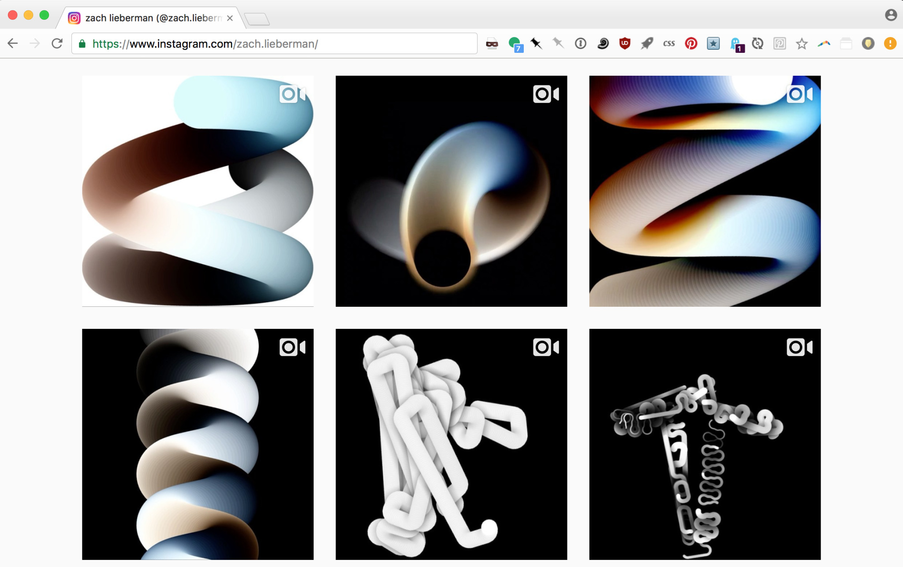

archive stuff, and keep track of things.
Back to Blog | Gary-Martin
Zach Lieberman |
|---|
|
I have been following Zach Lieberman on Instagram for a couple of years. He is an "artist, researcher, hacker dedicated to exploring new modes of expression and play", and "one of the co-founders of openframeworks, a c++ library for creative coding". I really admire his constant feed of coding sketches and how they iterate around a theme for a couple of weeks, then change drastically to a new idea just like that. He has talked about his process of daily sketches a couple of times through articles on Medium. He talks about making this quick and convenient for him to do, and then shares without thinking too much about the final output. Things are never complete, and he’s always ‘iterating’. I would like to incorporate this kind of mindset for my own works, having sketches I can play with and share really quickly, but am not quite sure how to do this with music just yet. With visual works I can see that this process makes sense and understand the appeal to his audience.  |